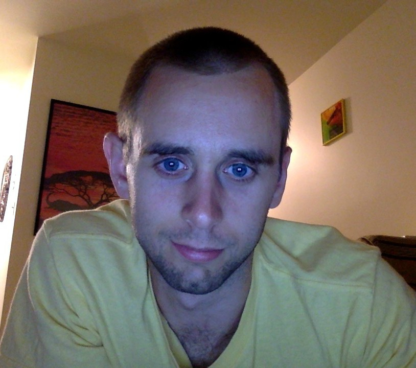

I'm a seasoned marketing professional initiating a career shift into programming. I've developed a keen fascination for front-end design. My ideal landing spot would be a role where I can utilize that skill, grow into a true UI/UX expert, and improve my back-end skills.
- Coding Skills
-
- Languages - HTML, CSS, Javascript, jQuery, SQL
- Design - Media Queries, CSS Grid, Bootstrap, Flexbox, Materialize
- Back End - API's, MySQL, Node.js
- Soft Skills
-
- Communication
- Leadership
- Collaboration
- Desire to learn
- Emotional Intelligence
- Listening
- Experience
-
Hupy and Abraham, S.C. Marketing Coordinator, 2013-Present
- Coding - Build HTML e-mails from scratch for e-marketing and drip campaigns.
- Project Management - Oversee monthly e-marketing campaign targeting 60,000+ subscribers. Manage promotional product inventory. Oversee 3rd-party vendor lead programs.
- Web Content - Compose news and evergreen content. Optimize and maintain online attorney profile sites.
- Events - Negotiate sponsorships packages. Recruit, train, schedule and manage Street Team promotional staff with primary objective of lead generation. Managed 200+ events annually across Wisconsin, Illinois and Iowa.
Lucky 13 Consulting Account Executive, Jan 2013 - Mar 2013
- Travelled business-to-business initiating cold-call sales of Quill office supplies.
- Made sales as large as $500.
- Interviewed and trained new hires on products and sales procedures.
- Education
-
Northwestern University Coding BootcampEvanston, IL
- Fullstack program teaching skills needed to become proficient frontend and backend developers.
- Certificate program spanning Aug 2017 - Mar 2018
Concordia University WisconsinMequon, WI
- Double Major: Mass Communication, Business Communication
- Bachelor of Arts, 2012 (3.5 GPA)
- Hobbies
-
- Health and Nutrition
- Fitness
- Sports
- Reading